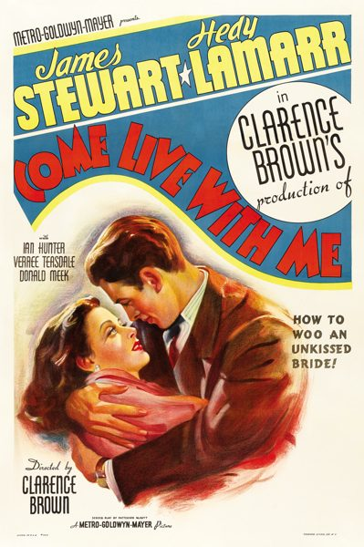

THE STANFORD THEATRE
Now Showing
·
Upcoming
·
Past
·
Search
April 3 - June 18, 2010
Spring 2010
22 bills
April 3 - 6
Mr. Smith Goes to Washington (1939)
129 min

Come Live with Me (1941)
86 min
April 7 - 9
Dodsworth (1936)
101 min
Make Way for Tomorrow (1937)
91 min
April 10 - 13
The Talk of the Town (1942)
119 min
Adam's Rib (1949)
98 min
April 14 - 16
The Ghost Breakers (1940)
85 min
Road to Morocco (1942)
83 min
April 17 - 20
Unfaithfully Yours (1948)
128 min
The Palm Beach Story (1942)
88 min
April 21 - 23
The Bachelor and the Bobby-Soxer (1947)
97 min
Every Girl Should Be Married (1948)
85 min
April 24 - 27
It's a Gift (1934)
73 min
She Done Him Wrong (1933)
68 min
April 28 - 30
Lady for a Day (1933)
92 min
Flying Down to Rio (1933)
89 min
May 1 - 4
Gilda (1946)
110 min
Gun Crazy (1950)
87 min
May 5 - 7
Ruggles of Red Gap (1935)
90 min
Twentieth Century (1934)
91 min
May 8 - 11
Only Angels Have Wings (1939)
121 min
Gunga Din (1939)
108 min
May 12 - 14
Genevieve (1953)
86 min
Green for Danger (1946)
91 min
May 15 - 18
Love Me Tonight (1932)
96 min
Trouble in Paradise (1932)
83 min
May 19 - 21
Cabin in the Sky (1943)
98 min
The Clock (1945)
90 min
May 22 - 25
A Tale of Two Cities (1935)
120 min
If I Were King (1938)
101 min
May 26 - 28
Wake Up and Live (1937)
91 min
Follow Thru (1930)
92 min
May 29 - June 1
Stagecoach (1939)
97 min
High Noon (1952)
85 min
June 2 - 4
Libeled Lady (1936)
99 min
After the Thin Man (1936)
108 min
June 5 - 8
The Day the Earth Stood Still (1951)
92 min
It Came from Outer Space (1953)
80 min
June 9 - 11
A Tree Grows in Brooklyn (1945)
128 min
The Late George Apley (1947)
98 min
June 12 - 15
The Spiral Staircase (1946)
83 min
Hangover Square (1945)
77 min
June 16 - 18
Morocco (1930)
88 min
The Devil Is a Woman (1935)
75 min
Archived
•
StanfordTheatre.org Original